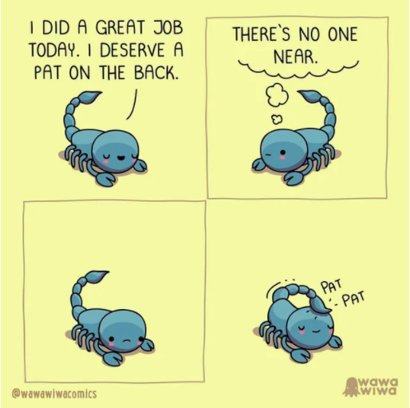

Disasters regularly affect individuals around the world. They often occur without any warning and can be very traumatizing and affect the individual well after the disaster occurs.
For example, disaster survivors often experience anxiety, depression, guilt, disconncection, insomnia, and many other feelings and changes for days, weeks, and even months after the disaster.
Approximately 40% of disaster survivors may experience emotional and mental distress even 6 months to a year after the tragedy. They also often need outside support.
If you know an individual affected by any disasters, be sure to check up on them regularly and reach out. In addition, you can offer to help them with simple daily tasks such as grocery shopping, walking their dog, or doing their laundry. Simple actions can go a long way.
Be sure to refer them to professionals that are trained for these situations. The Suicide Lifeline as well as Disaster Distress Helpline are always open.